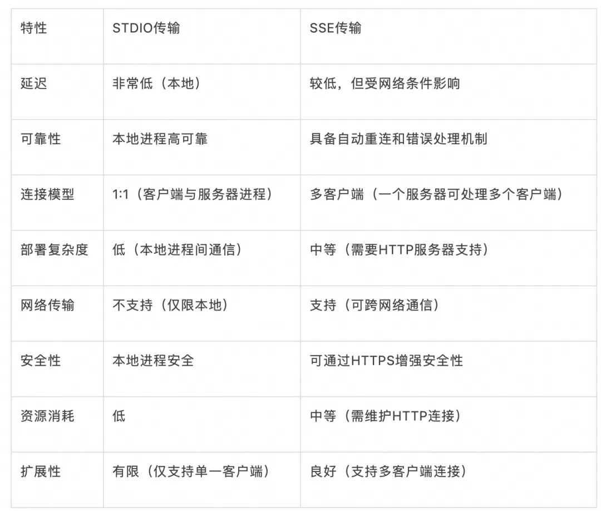
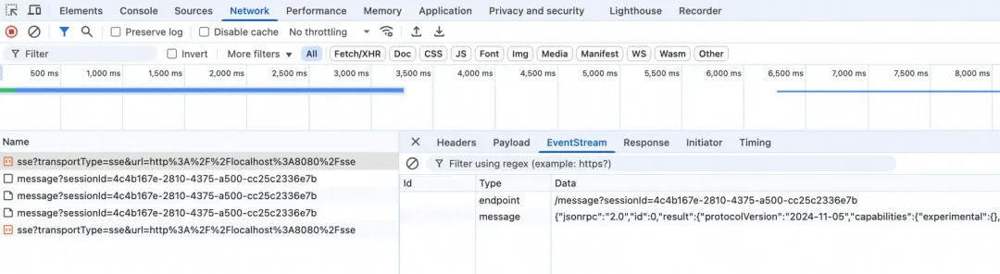
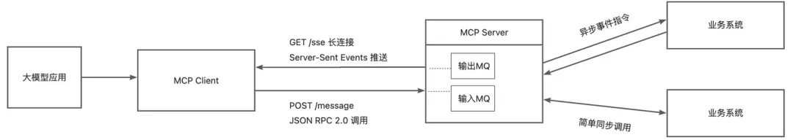
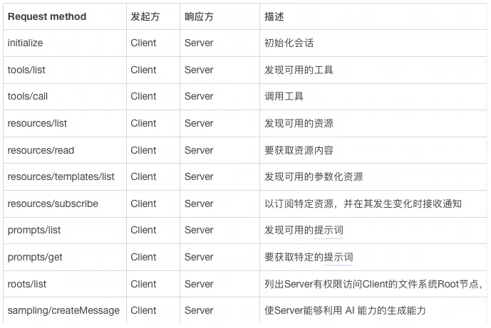
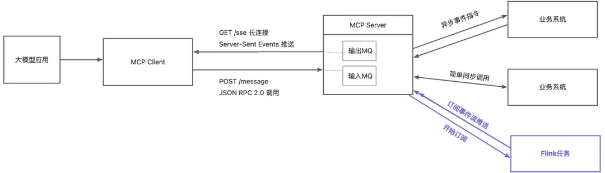
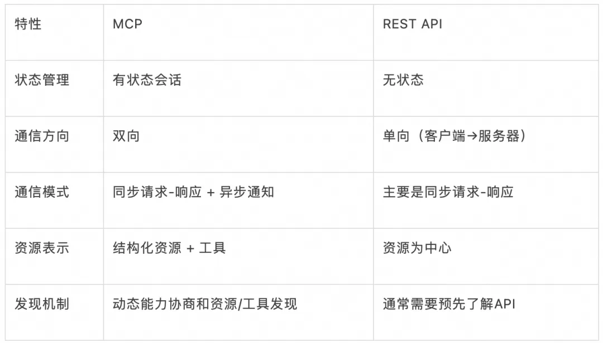
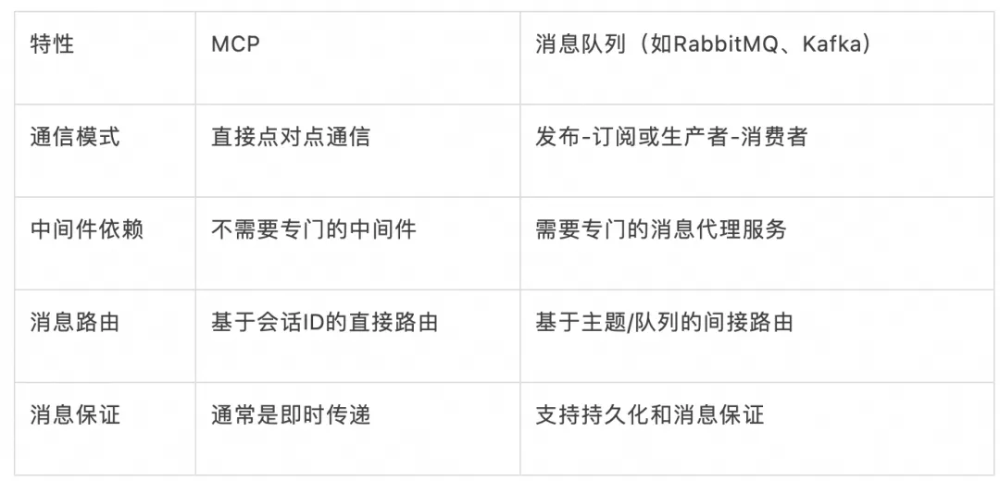
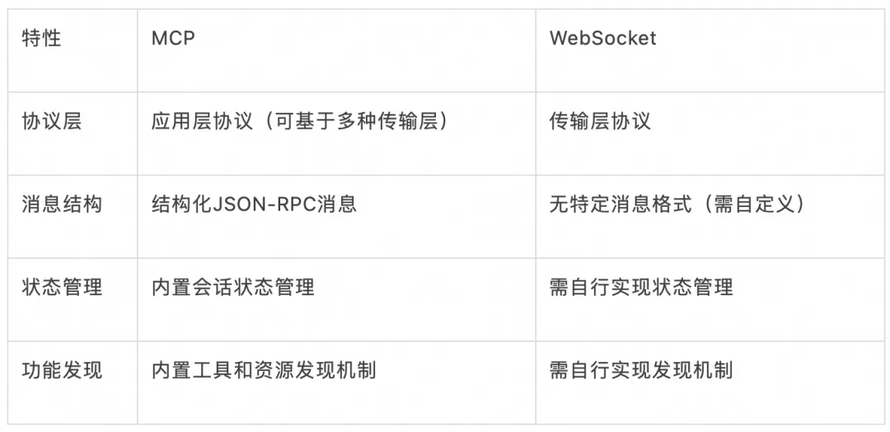

2 代码讲透MCP原理
1 MCP的通信方式
MCP提供了STDIO和SSE两种传输协议，当前很多实验性的工具都是使用STDIO传输。
不过如果提供服务的话，基本就是SSE（Server-Sent Events）。所以本文重点分析讨论SSE的MCP接入模式。

SSE 与 WebSocket 作用相似，都是建立浏览器与服务器之间的通信渠道，然后服务器向浏览器推送信息。
总体来说，WebSocket 更强大和灵活。因为它是全双工通道，可以双向通信；
SSE 是单向通道，只能服务器向浏览器发送，因为流信息本质上就是下载。如果浏览器向服务器发送信息，就变成了另一次 HTTP 请求。
这个特点让我更加好奇了，stdio中可以使用stdin来进行输入，使用stdout来进行输出。但是SSE是单向通道，MCP要如何实现双向通信呢？是建立两根SSE通道吗？带着这个疑问，我开始了动手实践。
2 MCP的SSE通信流程
利用MCP官方提供的工具npx @modelcontextprotocol/inspector 可以比较方便地拉起一个验证MCP的管理页。
针对这个管理页抓包就能发现一些SSE的通信端倪。

1./sse这个URL只负责推送信息，并不能发送信息，发送信息需要另外的URL。
2.Client连接上/sse这个地址的第一个Event就是告诉Client发送信息需要去哪个URL发，这个URL通常会带上唯一的会话ID。
观察这个抓包情况，我们前面的双向通信疑问基本可以有答案了：
1.只有一根SSE长连接，用来Server向Client推送数据，另外一个Client向Server发送请求的通道是使用普通的HTTP POST请求。
2.Client向Server发送的HTTP POST请求中只使用2xx反馈是否收到指令，所有的数据返回是通过一开始的SSE长连接来推送。
为了验证这个猜想，我还特地做一个实验，使用curl模拟了POST/messsage?sessionId=***发送一个请求包，果不其然在SSE的事件流中多了一条事件。
MCP的SSE通信实现
通过上一个章节的抓包，我们基本摸清了MCP的SSE通信流程：
-
/sseURL建立SSE长链之后先返回一个endpoint(常见为/message)，数据格式为纯文本的同域名URL字符串。 -
client使用POST向
endpoint(/message)发送调用请求，POST中的body满足JSON-RPC规范，包含字段 jsonrpc、method、params、id。 -
在
/sse长连接中返回的event满足JSON-RPC规范，包含字段jsonrpc、result、id、error(执行错误时)。
看起好像并不复杂，我们尝试用Python来实现一下（不使用MCP Python SDK）。
from fastapi import FastAPI, Request
import uuid
from sse_starlette.sse import EventSourceResponse
from pydantic import BaseModel
import json
app = FastAPI()
mcpHub = {}
class McpRequest(BaseModel):
id: Optional[int] = None
jsonrpc: str
method: str
params: Optional[dict] = None
class MCPServer:
def __init__(self):
self.queue = asyncio.Queue()
async def reader(self):
while True:
event = await self.queue.get()
yield event
async def request(self, payload: McpRequest):
if payload.method == "initialize":
await self.queue.put({"event": "message", "data": ..})
elif payload.method == "tools/list":
...
@app.get("/sse")
async def sse():
client_id = str(uuid.uuid4())
mcp = MCPServer()
mcpHub[client_id] = mcp
await mcp.queue.put({"event": "endpoint", "data": f"/message?client_id={client_id}"})
return EventSourceResponse(mcp.reader())
@app.post("/message")
async def message(request: Request, payload: McpRequest):
client_id = request.query_params.get("client_id")
if client_id not in mcpHub:
return "no client"
await mcpHub[client_id].request(payload)
return "ok"
在这段代码中，我们引入了这样几个设计：
-
我们使用了
asyncio.Queue()来解耦业务流和MCP服务流。这个消息队列联动EventSourceResponse的数据流。每往这个消息队列打一个消息，就会自动通过EventSourceResponse的数据流向Client推送一条消息。这样Client在Server侧看起来就是一个标准的订阅MQ的消费者。 -
在内存中维护一个
client_id映射消息队列的字典，这样一旦有消息进入就可以知晓使用的是哪个MQ，然后往对应的MQ里面投递消息。在分布式系统中，这个client_id可以是消息队列的全局唯一标识，这样无论打到哪台机器上，都能够找到正确的队列。 -
服务侧在处理之后，将消息投递回消息队列之后，Client就能感知。MCPServer和MCPClient保持长链之后，后方的业务系统侧理论上可以进行无限时长执行（如果Client侧不主动超时退出），一切均以消息投递回来为准。

我们可以参考文档来看看有哪些method需要被支持：

MCP的订阅模式扩展思考
在MCP的resource的method中，有个不起眼的resources/subcribe引起了我的注意。首先。我们来看看什么是resource，官方给出的定义是：
Resources represent any kind of data that an MCP server wants to make available to clients. This can include:File contents、Database records、API responses、Live system data、Screenshots and images、Log files、And more
所以，如果我们使用resources/subcribe订阅一个Database，那么这个数据库的所有变动就会源源不断地推送过来，这就非常近似流计算的常见使用形态了。
因为SSE已经让Server建立向Client的单向数据流，所以如果Client发起一个订阅，我们就创建一个Flink流计算任务向MQ打消息，就非常原生地实现了资源的订阅。
我们可以扩展一下上面的这个拓扑结构。

1.从大模型视角看流计算：基于MCP协议，大模型实际上能够非常优雅地接入流计算的能力，来完成复杂业务逻辑构建。
2.从流计算视角看大模型：使用MCP协议之后，大模型似乎就变成了一个标准流计算处理节点，能够接收流式消息，也能给向另外的MQ投递消息。
不得不说，这个确实就是MCP设计上的一个优势。感觉MCP有点像RPC，又有点像MQ，那么这到底是什么呢？我们不妨从编程模型的角度来思考一下。
MCP的编程模型思考
MCP从编程模型的角度来看，本质上是一种有状态的双向RPC（远程过程调用）模型，结合了事件驱动和请求-响应的特性。这种混合模式使其在AI应用与外部系统集成方面具有独特优势。
MCP的核心特征包括
1.有状态会话：与传统无状态REST API不同，MCP维护会话状态，客户端和服务器之间建立长期连接，会话具有明确的生命周期。
2.双向通信：不仅客户端可以调用服务器（传统RPC模式），服务器也可以调用客户端（反向RPC）。例如，服务器可以请求客户端执行AI采样。
3.基于能力的协商：初始化阶段进行能力协商，动态发现可用功能，适应不同实现和版本。
4.事件通知机制：支持单向通知，资源变更订阅模式，异步事件处理。
5.标准化接口：定义了一组标准操作，使用JSON Schema定义参数和返回值，促进互操作性。
为了更好地理解MCP的定位，我们可以将其与其他常见的编程模型进行比较
MCP vs REST API

MCP vs 消息队列（MQ）

MCP vs WebSocket

MCP在各种编程模型中占据了一个独特的位置：
-
比REST API更有状态和双向，但比消息队列更直接和轻量。
-
比WebSocket更结构化和标准化，但比gRPC更灵活和易于理解。
-
比GraphQL更专注于工具调用，但比RPC更关注资源和上下文。
同时，正因为MCP这样的一个独特的功能位，不要因为当前的一些能力局限性，就放弃了MCP的原生化的适配。异步任务、事件驱动等架构本身就应该能够原生对接MCP。
MCP服务的简单实现
既然MCP的整个运行原理并不复杂，我们就尝试自己实现一次，致敬一下这个优秀的设计。
from fastapi import FastAPI, Request
from sse_starlette.sse import EventSourceResponse
import asyncio
import json
import uuid
from pydantic import BaseModel
from typing import Optional
import uvicorn
import inspect
app = FastAPI()
mcpHub = {}
class McpRequest(BaseModel):
id: Optional[int] = None
jsonrpc: str
method: str
params: Optional[dict] = None
class MCPServer:
def __init__(self, name, message_path, tools):
self.queue = asyncio.Queue()
self.client_id = str(uuid.uuid4())
self.message_path = message_path
self.info = {
"protocolVersion": "2024-11-05",
"capabilities": {
"experimental": {},
"tools": {
"listChanged": False
}
},
"serverInfo": {
"name": name,
"version": "1.6.0"
}
}
self.tools = tools
def list_tool(self):
result = []
for tool in self.tools:
toolInfo = {
"name": tool.__name__,
"description": tool.__doc__,
"inputSchema": {"type": "object","properties":{}},
}
for name, param in inspect.signature(tool).parameters.items():
toolInfo["inputSchema"]["properties"][name] = {
"title": name,
"type": "string",
}
result.append(toolInfo)
return result
async def reader(self):
while True:
event = await self.queue.get()
yield event
@staticmethod
def response(result, id):
message = {
"jsonrpc": "2.0",
"result": result,
}
if id is not None:
message["id"] = id
return json.dumps(message)
async def request(self, req: McpRequest):
if req.method == "initialize":
await self.queue.put({"event": "message", "data": self.response(self.info, req.id)})
elif req.method == "tools/list":
await self.queue.put({"event": "message", "data": self.response({"tools": self.list_tool()}, req.id)})
elif req.method == "tools/call":
for tool in self.tools:
if tool.__name__ == req.params.get("name"):
result = await tool(**req.params["arguments"])
await self.queue.put({"event": "message", "data": self.response({"content": result, "isError": False}, req.id)})
break
async def test(state=None):
"""
description
"""
result = f"hi {state}"
await asyncio.sleep(1)
result += "!"
return result
@app.get("/receive_test")
async def receive_test():
mcp = MCPServer(name="mcp-test",message_path="/send_test", tools=[test])
mcpHub[mcp.client_id] = mcp
await mcp.queue.put({"event": "endpoint", "data": f"{mcp.message_path}?client_id={mcp.client_id}"})
return EventSourceResponse(mcp.reader())
@app.post("/send_test")
async def send_test(request: Request, payload: McpRequest):
client_id = request.query_params.get("client_id")
if client_id not in mcpHub:
return "no client"
await mcpHub[client_id].request(payload)
return "ok"
if __name__ == "__main__":
uvicorn.run(app, host="0.0.0.0", port=8001)
如上大概100行左右的代码，我们实现了一个简易版本的MCP服务，较官方的MCP Python SDK，我们获得了几个重要的特性优化：
1.tool注册不再依赖@mcp.tool这样的注解，完全可以动态传入，针对不同的场景，提供不同MCP URL，上面提供不同的Tool。
2.编程模型为MQ驱动的服务，对接异步系统、事件驱动的系统或平台较为友好。参考该Python实现，转化成其他语言的版本也较为方便。
3.不依赖 /sse /message 这些默认路由地址，也能正常运行，证明MCP的URL可以完全自定义
总结：理解MCP的本质
本文深入探讨MCP的原理、通信机制和编程模型本质之后，我们看到MCP不仅仅是一个简单的API或SDK，而是一个精心设计的协议，它：
1.采用client-host-server架构，支持多种服务器连接；
2.实现了有状态的双向RPC模型，结合了事件驱动特性；
3.提供了标准化的工具调用和资源访问机制；
4.支持动态能力协商和功能发现；
5.相比较MQ、API、WS，占据了独特的功能位置，专为AI应用与外部系统集成而优化；